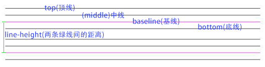

基本概念
line-height
定义：两行文字基线之间的距离。

vertical-align
定义：指定元素的垂直方向对齐方式。
vertical-align起作用的前提是元素为inline水平元素或table-cell元素，且默认对齐方式是 baseline。
联系
这两个属性看似关系不大，但实际联系很密切，因为 vertical-align 属性值的计算方式是相对于 line-height 的。
现象

img 的底部间隙
在一个 div 中放一个 img ，底部会有一点空白间隙
原因：元素默认情况下对齐方式是基线对齐，即 baseline。而在浏览器中，都有默认的字体的大小，这个空隙就是来源于这个。虽然 div 中只有一个 img 标签，但其实还存在一个我们看不到的空白节点，它类似文本节点，具有文字的大小、行高（可以把它想象成一个宽度为 0 的文本节点）。因此，图片为了保持与基线对齐，底部就必须留出空隙，大小为半倍文本间距（(line-height - font-size)/2）。
解决办法：将 line-height 和 vetical-align 属性的其中一个给干掉
（1）将图片设置为display:block（利用vertical-align的生效前提）；
（2）将vertical-align设置为top，bottom，或者middle等值（利用属性值的表现行为）；
（3）将line-height设置为0（利用line-height为0时，基线上移）；
（4）将font-size设置为0 （如果line-height的值为相对值，如1.5）；
（5）将img设置浮动或者绝对定位（如果布局允许的话）
让图片垂直居中

我们给图片加上了 vertical-align: middle 属性，可是能看到图片并没有发生变化。
原因：这里是因为属性失效了吗，其实并没有，这里属性是起作用了的，但是因为后面空白节点的高度不够，而图片是以它为参照物的

这里能清晰的看到图片相对于 x 其实是垂直居中的，但是 x 的行高并没有相对父盒子撑起来，所以会看到好像并没有什么变化。
解决办法：通过为父元素添加 line-height 属性，然后空白字符会继承这个属性形成高度，相当于把空白字符当作参照物，让它先完成垂直居中，再给 img 设置 vertical-align: middle ，然后就会相对于空白字符的中线完成近似垂直居中

这样就完成了居中，但是因为文字有下沉，相对绝对中心位置会下沉一点（不同字体下沉程度不同），因此这个垂直居中会有一些偏差，如果想实现完全垂直居中，在不影响文档结构的前提下可以给父元素设置 font-size: 0 属性，让空白字符的高度为 0，那么它的各种线就都会重合在高度为 0 的这条线上。